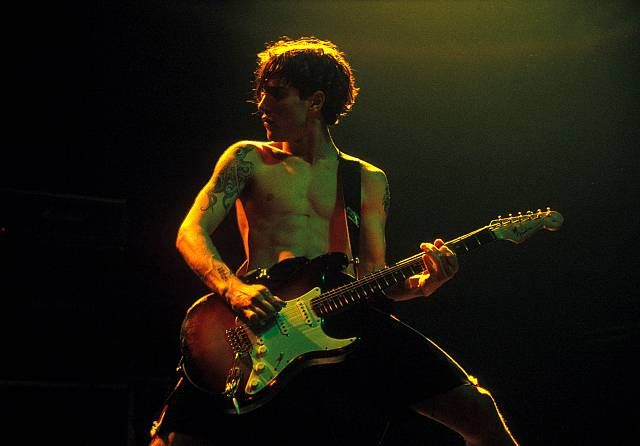
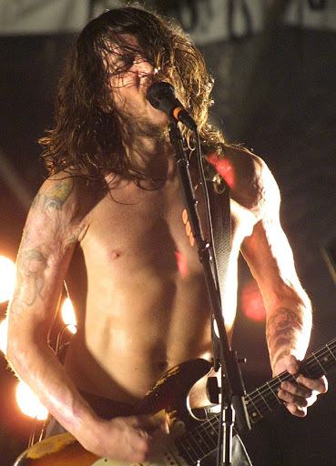

Cuando Frusciante tenía quince años, vio por primera vez a los Red Hot Chili Peppers en concierto, y se convirtió en fan de la banda, hasta el punto de aprenderse las partes de bajo y guitarra de los tres primeros discos del grupo. Al concurrir frecuentemente los conciertos de la banda, llega a entablar amistad con el guitarrista del grupo, Hillel Slovak. Frusciante también se hizo amigo del baterista, D.H. Peligro, antiguo miembro de los Dead Kennedys. Ambos solían improvisar juntos, y un día, cuando John tenía 18 años, Peligro invitó a su amigo Flea («Pulga» en inglés), y bajista de los Red Hot Chili Peppers para improvisar juntos. Conectando John, rápidamente con el genial bajista. Ese mismo año, en 1988, Red Hot Chili Peppers sufre un serio golpe con la muerte por sobredosis del guitarrista Hillel Slovak. Tras el fallecimiento de Slovak, y el baterista Jack Irons, deja la banda al no ser capaz de asimilar la muerte de su amigo. Los restantes integrantes de la formación, el bajista Flea y el vocalista Anthony Kiedis, decidieron continuar con su carrera y contrataron a D.H. Peligro como batería y a DeWayne «Blackbyrd» McKnight como guitarrista. Sin embargo, McKnight no acababa de convencer a los viejos integrantes de la banda, y decidieron buscar un sustituto. A Flea le vino a la mente la improvisación que tuvo aquel día mencionado anteriormente con John Frusciante, y decidieron someterle a una audición. Aceptándolo como nuevo guitarrista del grupo. Poco después de la llegada de Frusciante al grupo, D.H. Peligro fue despedido por sus excesos con las drogas, siendo sustituido por Chad Smith. Y en 1989 comenzaron la composición de lo que sería el cuarto álbum del grupo, y primero con Frusciante a la guitarra, Mother’s Milk.
El siguiente álbum fue Blood Sugar Sex Magik. Siendo un éxito desde su lanzamiento en 1991. Con éxitos como «Give It Away», «Under the Bridge», o «Suck My Kiss». Convirtiendo a los miembros de los Red Hot Chili Peppers, en superestrellas. Algo que no encajaría muy bien con Frusciante, comenzando a sentirse incómodo con su nueva condición de rockstart, disgustándole la excesiva popularidad de la banda. Frusciante confesaría después que todo había ido demasiado alto, demasiado lejos y demasiado pronto. Todo estaba pasando de golpe, y no pudo hacerle frente al meteórico ascenso de la banda. En un concierto de la gira mundial de 1992, concretamente en el Club Quattro de Tokio, John Frusciante se niega a subir al escena, diciendo en aquel instante que había dejado la banda. Al final, sus compañeros consiguieron convencerle de que tocase en aquel concierto, pero al día siguiente se marchó a California. Frusciante desarrolló una fuerte adicción a las drogas durante sus cuatro años como miembro de los Red Hot Chili Peppers. Y tras regresar a su casa en California, John cae en una profunda depresión, al sentir que su vida estaba acabada. Se centró en la pintura, y para afrontar su depresión empezó a consumir aún más drogas, viéndose su vida muy seriamente amenazada.
A principios de 1998, Frusciante ingresó en la clínica de rehabilitación «Las Encinas» en Pasadena. Después de su ingreso, se le diagnosticó una infección bucal potencialmente letal, que sólo podía ser curada, reemplazando todos sus dientes por una dentadura postiza. Recibiendo incluso injertos en los brazos, debido al deteriorado estado de su piel. Después de recuperarse de su grave estado de salud, Frusciante comenzó una nueva etapa marcada por la espiritualidad y el yoga. Comenzando una nueva vida opuesta a la anterior. Además, para no distraerse de su actividad musical y espiritual, decidió renunciar a su vida sexual. A comienzos de 1998, Red Hot Chili Peppers despide a Dave Navarro, debido a diferencias creativas. El guitarrista que sustituyó a John Frusciante, y con el que grabaron en 1995 el disco One Hot Minute. En ese momento la banda se plantea su disolución, comentándole Flea, a Anthony Kiedis, que la única manera de seguir con la banda, era con John Frusciante dentro de ella. Con el guitarrista libre de adicciones, Kiedis y Flea pensaron que era el momento idóneo para pedirle que volviese. Cuando Flea llegó a casa del guitarrista y le pidió que regresase a la banda, Frusciante le contestó llorando, que nada le haría más feliz. Una vez recompuesta la banda, comienzan a trabajar en un nuevo disco, «Californication», editado en 1999. Con éxitos estratosféricos como «Otherside» o «Scar Tissue». Volviendo con Frusciante, una de las piezas claves del sonido y de las composiciones de la banda. En 2001 Frusciante publica tres discos en solitario, y comenzó a grabar su cuarto álbum con los Red Hot Chili Peppers, «By the Way», publicado en 2002. Con grandes éxitos como «By the Way» , o «Can’t Stop», con uno de los riffs más reconocibles de la historia del rock. Entre febrero de 2004 y febrero de 2005, John publica seis discos en solitario. No está mal. A comienzos de 2005, el guitarrista entró en el estudio para grabar su quinto álbum con los Red Hot Chili Peppers, «Stadium Arcadium». Publicado en 2006, y con el éxitos «Dani California». En 2009 John Frusciante abandona definitivamente Red Hot Chili Peppers, aunque según John no tenía intención de dejar la banda, pero al hablarle Flea de tomarse un par de años sabáticos tras la gira de Stadium Arcadium, Frusciante decide centrarse por completo en sus propios proyectos, principalmente música electrónica. John fue sustituido por Josh Klinghoffer en los Chili Peppers, con el que han publicado sus dos últimos discos, siendo el guitarrista actual de la banda.
